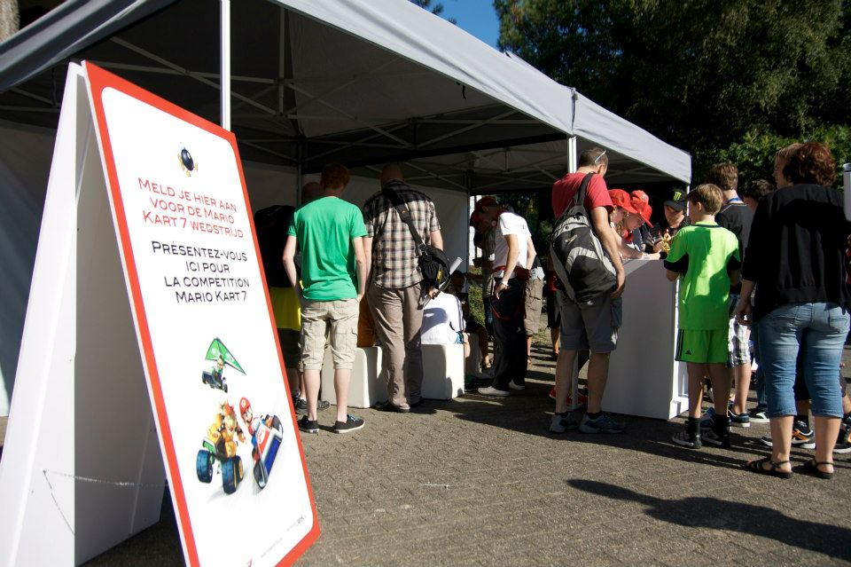
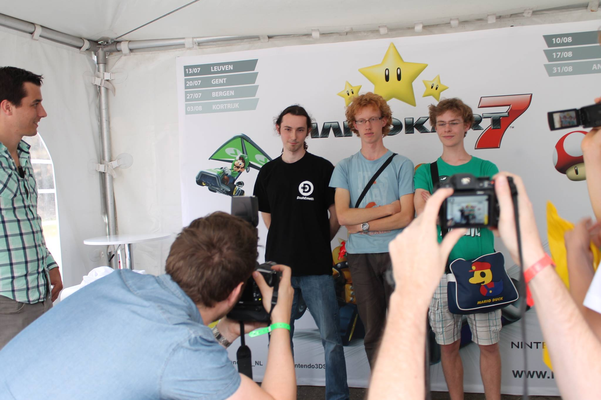
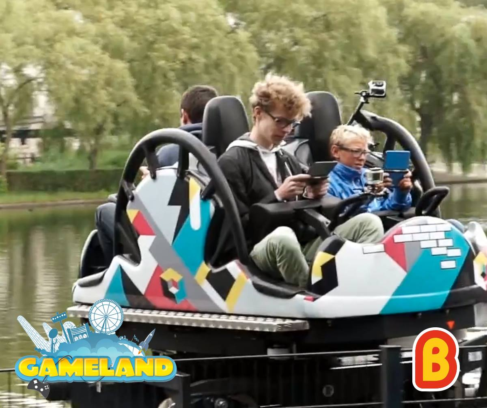

Mario Kart
As for gaming, I'm a big Mario Kart fan, more specifically the Wii version. When people introduce me to others, Mario Kart is usually said within the same breath!
I joined the Mario Kart community back in the Summer of 2009 as I created my Youtube channel then.
Currently I'm ranked #1 of Belgium in Mario Kart Wii, and have had the title of Belgian Mario Kart Champion a few time over the past years officially recognized by Nintendo Benelux, which I'm particularly proud of! You can find me on the Time Trail rankings on Mario Kart Players Page, Mario Kart World Records and Mario Kart Leaderboards. I time trail other Mario Kart games too, but primarily Mario Kart Wii.
Real Life Tournaments
#1 in Mario Kart 7 Gameland 2012 at Bobbejaanland by Nintendo Benelux
This was my first Mario Kart tournament ever. This was a random Mario Kart 7 tournament organised by Nintendo Benelux at Bobbejaanland during the Game Land event. Game Land was an annually gaming event of Bobbejaanland, usually helt during the first half of September where the whole amusement park turns into a gaming convension where Nintendo and other big companies show off their newest games.
The rules of the tournament were non-standard. You weren't allowed to chose your vehicle and character combo
and the only track you could play was Toad's Circuit. They handed you a 3DS with the combo set already.
The best combo that was available I remember was Bowser on the Bee kart with the blue monster wheels, haha!
You played one race and then the top 4 advanced to the next round.
It was like this for the whole tournament, including the final round.
There weren't any notable players participating, only casual players and some that somewhat knew how to drive, so not too much competition here. The price was a Trophy representing the ingame Special Cup trophy wich can be seen in the banner picture of this page.
Sadly I don't have proof for my result, I have three pictures left taken near the tent where the tournament took place, but no podium picture and/or post by Nintendo announcing this tournament. (Photo 1, Photo 2, Photo 3)
A picture of the tent where the event took place. If you look at the table to the right where some people are standing around you can see the Special Cup trophy in display that you would have been able to win.
#1 in Mario Kart 7 Tour 2013 at Antwerp by Nintendo Benelux
This was a Mario Kart 7 tournament organised by Nintendo Benelux in Antwerp. This tournament was part of the Mario Kart 7 Tour Belgium 2013 tournament. This is how it worked; Over the whole year there would be a local tournament helt in 8 big cities in Belgium. The winner of each tournament would get a free ticket to Bobbejaanland where the finals would be played. This particular tournament was the one helt in Antwerp.
The rules of the tournament were a bit better. You could use your own 3DS and your own character/vehicle combo, though the tracks were only Mushroom Cup tracks.
If I remember correctly, the pre-rounds were 2 races (Toad's Circuit and Daisy Hills), top 4 advances and the finals were the whole Mushroom Cup.
This time one notable players participated, namely Dash Emeth who I knew from the Mario Kart community, and who I'll be facing many more times to come in other tournaments!
Other than that, I brought two school friends with me to play along and the other participants were just casual players. So, like last tournament, not too much competition here.
Especially since Emeth already won a tournament in one of his close-by cities, so he had a free ticket already anyway. If I had gotten second place and Emeth first, I still would have received a free ticket to the finals.
The price was, like last tournament, a Trophy representing the ingame Special Cup trophy wich can be seen in the banner picture of this page.
Left is a random player, middle is me and right is Emeth.
#2 in Mario Kart 7 Tour 2013 at Bobbejaanland by Nintendo Benelux
This was the finals of the Mario Kart 7 Tour Belgium 2013 tournament organised by Nintendo Benelux in Bobbejaanland. The tournament was held, like last time in Bobbejaanland, during the Game Land gaming event. Nintendo had a booth with lots of Nintendo games, mostly focussed on the newest 3DS games at the time.
The rules were very good this time. You could use your own 3DS, chose your character/vehicle combo and also you could chose what track you want to play and the game would randomly chose what track to play from the selected bunch, exectly like how it works in online rooms. I don't remember all the tracks we played, but I remember playing Wario's Shipwreck and Neo Bowser City.
This tournament was realy cool and competitive this time! Quite many notable players participated for a local tournament.
Dash Emeth was there ofcourse, but this time he brought one of his teammates with him; Dash ProF who was the winner in another city so he participated too. He's more know for his skills in Smash Brothers, but he's still very competent in Mario Kart. I know him via Mario Kart Wii too.
A player called SharkOfDark was also present. He was an active player in WW's (Worldwide's, a term for online races) but not too much in Time Trails. He was a great player and definitely on equal footing as me in terms of pure online skills. He definitely was the toughest opponent.
Another player called DarkSilver sadly did not make it to the finals as he got 2nd place in the tournament where SharkOfDark got 1st place for his spot in the finals. They're both friends of the same highschool, which is pretty cool! DarkSilver was mainly a Time Trailer, but also a great online player. Would have been awesome to have met him.
Last, but definitely not the least notable player, if not THE most notable is Negens. He's a very well known Mario Kart player, mainly made his name in the Mario Kart Wii community for playing in the highest competitive division at the time when he played actively and was widely regardes as the best Belgian Mario Kart player. His skills on Mario Kart 7 didn't transfer over as wel as his Mario Kart Wii skills, so for me he wasn't the biggest threat, but for sure the second biggest.
The other three players of the finals weren't anything special, just casual players who just ended up getting into the finals. They did knew how to drive decently, but nothing compared to actual competitive players.
In the end I got 2nd place overall. Really happy I was able to end up on the podium as my item luck was quite against me. SharkOfDark was able to run in 1st place most races without much trouble while I was stuck in the pack trying to catch up, haha! Again, another congratulations to SharkOfDark! Well played, man!
This time only first place received a price, which was if I remember correctly also another Special Cup trophy and also a free 3DS with a copy of Mario Kart 7.
You can find all the history of the Mario Kart 7 Tour tournament on its Facebook page.
Left is Dash Emeth, middle is SharkOfDark and right is me.
#1 in Mario Kart 7 Online BE Community Tournament 2013 by Nintendo Benelux
This tournament was fully online, organised by the Facebook page of Nintendo Benelux. You would have to play in a specific Community group where you have to enter in a code provided by Nintendo Benelux to enter. You get 1 hour time to play as many races as you can and score as much as you can.
The top 3 of this tournament would get a free ticket to the Anime convension called Japan Expo at Brussels in 2013 and play the finals between us three there.
The rules were pretty good again. You could chose your own vehicle and chose which track to play. Literally like an online worldwide room.
One annoying thing I remembered was that over time people would stop playing and the rooms would not be full anymore. That doesn't sound too big of a problem, but you don't get the full 10 points for getting first if the room is not full (8 players max), so I was pretty scared that my room would be the only one not being full and then not having the most points overall cause of not getting the full 1st place points...
But that was not a problem, I got 1st place by a landslide (52 points). There weren't any notable players I met during the tournament. I do see that in 4th place is the Mii that looks like the one from Dash Emeth. I guess he must have had the same problem I had with not having a full room, but even worse. Or he started playing later in the hour and did not have enough time to get enough points... Either way, he sadly did not make it.
The two players allong with me in the top 3 were unknown to me, but I was not going to underestimate them.
The official post of Nintendo Benelux can be found here.

The post on Facebook of this result can be found here.
#1 in Mario Kart 7 Japan Expo Belgium Final at Japan Expo Brussels by Nintendo Benelux
This tournament took place in the anime expo called Japan Expo 2013 at Brussels. Since I finished in the top 3 in the last tournament, I got a free ticket to the convension and a spot in the finals.
What was extra special about this tournament is that the voice actor of Mario, Charles Martinet, was present! He was going to play allong in the finals and commentate in Mario's voice!
This is how the tournament was setup, there was a seperate venue with a big podium where concerts and other events took place for the Expo. On that podium is where the finals took place... Yeah I know, pretty insane, haha!
We would all sit in a row and play the finals. Charles would get a 3DS with a capture card and that would then be projected on a big screen.
Now sadly, that didn't go as planned as for some reason when we were about to start the finals, the footage of the capture card wasn't getting delivered to the nearly laptop that was connected to the projector. So in the end, sadly, the audience got to see no footage at all..
I was thinking about offering my own 3DS as mine also has a capture card and by coincidence I brought my capture card cable with me. But I didn't voice my idea in the end sadly. I do kind of regret not doing so, but I was afraid talking in French and/or having to download the needed application. Maybe it would have been too much of a hassle to do is what I thought... Oh well, that's how it went and nothing I can do to change it now.
The rules of the tournament were strange sadly. We played a full GP, but is was the Leaf Cup out of all the cups strangely enough. + to top it off, it was on 50cc!? Yeah, super strange indeed.
The two other finalists were decent players, but were clearly not players involved in the competitive scene or knew well how enough how to drive properly. So in the end, did not have too much competition and won the finals.
I do remember one close call. On DS DK Pass I got hit by a few too many blue shells and the final turn was super close. I was able to keep my first place my squeezing an extra SSMT on the final straight after the final turn before the finish line lap 3. If I didn't go for that SSMT, I would not have gotten 1st on that track. Though, that would not have been a problem though as on all the other tracks I got first comfortably, or atleast I don't remember anything special happening those races.
The price I got was a big Mario figure that's designed to hold your 3D, another Special Cup trophy and a piece of paper being a certificate that you won the finals.
Sadly, no picture survived of this event. There's an articel left, but the url is dead and it wasn't backed up on the Wayback Machine.
This is what the url used to be: Page,
and this is the only remains of that tournament I was able to find: Photo.
You can sort of see how we were sitting on the podium, Charles being all the way on the right side of the picture. If I remember correctly, I'm sitting on the left out of the frame, but I'm not sure as the quality of the picture is super bad.

This is that certificate that I was talking about. Now sadly, dumb me I folded it in two instead of making the paper into a cilinder shape. The full paper didn't fit in the bag I had with me, so that's why I did that so it has this ugly damaged line crossing the paper. I also let Charles sign this certificate, so that's what those scribbles are.
#1 in Mario Kart 7 Promotion video "Tournament" at Bobbejaanland by Nintendo Benelux
Now, this one was a pretty strange one. Gameland announced that it would be holding a Mario Kart 7 tournament in promotion for the next upcoming Gameland 2014 event at Bobbejaanland. The gimmick of this tournament being that all players would be playing the races while riding a coaster!!!
Yeah, very strange indeed, but sounded so amazing to me, I couldn't let this one slide away!! The way you were able to participate is by sending an email to the organiser and basically trying to convince him/her to let you enter the tournament.
So it took away all breaks and let out my biggest ego and wrote down all my achievements in Mario Kart at the time, hahaha! And yeah, I ended up being allowed to participate! I was super excited!!
Sadly, the tournament wasn't a success. I ended up being the only one sending a mail and showing up... The prices you would get were valued at about €200, so I was just getting them for free.
So to compensate on the missing players and still get some gameplay in, we asked random people in the park if they wanted to join the coaster and play some Mario Kart 7.
This is how the races were: They gave you a 3DS to use and a wristband so the 3DS wouldn't fly out of your hands into the water below, you got to chose you character/vehicle combo and the only track we played was Toad's Circuit. In total we played 4 races.
As for how it felt/went playing in a coaster. Honestly, it wasn't as bad as you would think. At first it flet super strange, but after a while you got used to it and I was even able to do the shroomless ramp cut before the final big turn! I got first place each time without any trouble as it seemed like the other players had it much worse to control their kart while riding the coaster, haha!
As for the prices I mentioned, they were not Nintendo themed. I don't remember all of them, but the best price among them was a Steelseries Siberia V2 Frost Blue headset, a headset I would go on to use for a few years. So pretty good prices honestly.
Since this was a promotion event, they recorded the whole thing and made a promotion trailer for the Gameland event of the whole thing of about 1 minute of length. Super super sadly, that video is lost to time and I never downloaded a back up of it which I highly regret not doing. I have aksed the original organiser if he still has that video and is willing to share it with me, but no answer yet. Will update the page once it's available, if ever.
The only thing surviving from this promotion is this articel by the local news agency "Gazet van Antwerpen" and the picture below.
The official post of Gameland can be found here.
You can me sitting in the coaster during the recording. I'm in the middle of the frame with the wild hair moving everywhere, haha! Was such a good time!
#1 in Mario Kart 8 Tour at Mechelen by Nintendo Benelux
Now that Mario Kart 8 had been released, it was time for another Tour themed Tournament like the Mario Kart 7 Tour tournament, but for Mario Kart 8. Rules are the same, 8 finalist spots and you get your entry ticket to the finals by winning a tournament in a close-by city that held a tournament for that.
This time no tournament was held in Antwerp, so the next closest city was Mechelen.
The rules were good this time. You could chose your character/vehicle combo and the tracks were random. Each round was 4 player splitscreen, so that was annoying to play in 30fps. As well as having to use a random controller each round. I'm used to playing Mario Kart 8 with the Wii U gamepad, but I think I was only able to play with it during one round.
The only notable player that was there was, once again, Dash Emeth. Now, in this game you have a super overpowered mechanic called fire hopping. It's a very tech intensive strategy and requires a ton of practice to do well, still be fast doing it and keeping good lines. Not to brag but, I got the hang of fire hopping pretty early on after it's discovery merely a week after the game came out compared to even a big chunk of the competitive scene players. Early on getting Worldwide top 10's wasn't that difficult for me. Now it's obviously a different story, haha!
So even with Emeth playing, if I didn't get hit by too many blue shells, I wouldn't have too much trouble. Which ended happening, so I won this tournament.
Now, like in the Mario Kart 7 Tour tournament, even though Emeth was there and didn't won, this time he would go on to win a tournament in another city to still play in the finals at Bobbejaanland.
The price was another Special Cup trophy, a white manget board with Mario Kart 8 themed magnets and a free ticket to Bobbejaanland where the finals would be played.
You can find more pictures of the Mario Kart 8 Tour Mechelen tournament here. Aswell here's the official site of the Mario Kart 8 Tour tournament where you would do the registrations. Sady the site is down, but has luckly been backed up on the Wayback Machine.

Left is Emeth, middle is me and right is a player called Darktainer, he's not into the competitive scene but was decent at the game.